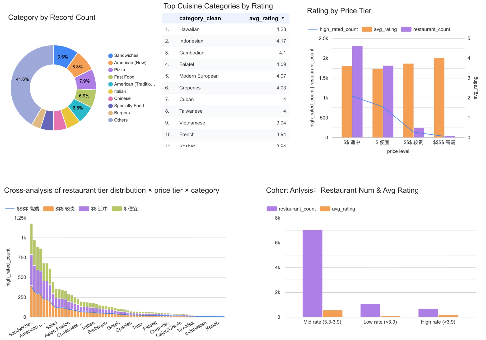
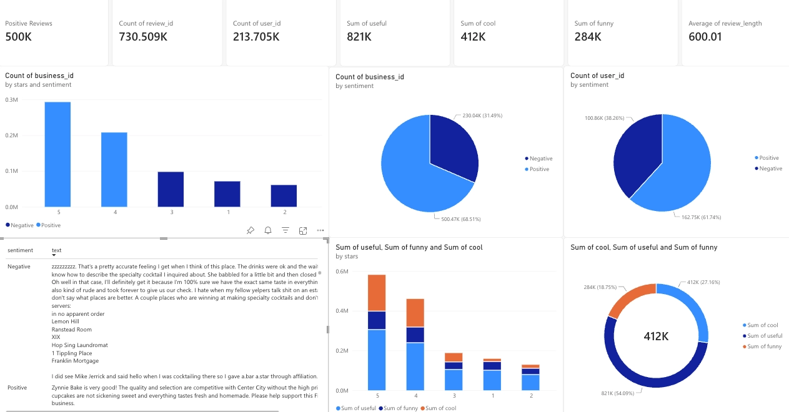

M.Sc. Computational Social Science | B.A. Education
8 years as a B2C & B2B marketer across EU & Asia, including 3 Fortune 500 companies. Now I aim to connect data with diverse analytical methods to help teams make better market decisions.
M.Sc. Computational Social Science, Linköping University (2024.08–2026.06).
Core courses: R programming, Natural Language Processing, Machine Learning, Deep Learning, Social Network Analysis, Causal Inference, and Discrete Choice Modelling.
Predicting consumer type from writing style, using XGBoost trained on BERT authenticity features.
AUC improvement: +0.117 vs. Logistic Regression (0.746), and +0.014 vs. Random Forest (0.849).

